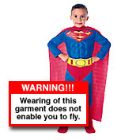

| Ever
wonder?
Contributed by: Samuel P. Mallare
-
Why the sun lightens our hair, but darkens our skin?
- Why
women can't put on mascara with their mouth closed?
- Why
don't you ever see the headline "Psychic Wins Lottery"?
- Why
is "abbreviated" such a long word?
- Why
is it that doctors call what they do "practice"?
- Why
is it that to stop Windows 98, you have to click on "Start"?
- Why
is lemon juice made with artificial flavor, and dishwashing
liquid made with real lemons?
- Why
is the man who invests all your money called a broker?
- Why
isn't there mouse-flavored cat food?
- When
dog food is new and improved tasting, who tests it?
- Why
didn't Noah swat those two mosquitoes?
- Why
do they sterilize the needle for lethal injections?
- You
know that indestructible black box that is used on airplanes?
Why don't they make the whole plane out of that stuff?!
- Why
don't sheep shrink when it rains?
- Why
are they called apartments when they are all stuck together?
- If
con is the opposite of pro, is Congress the opposite of
progress?
- If
flying is so safe, why do they call the airport the terminal?
In
case you needed further proof that the human race is doomed
through stupidity, here are some actual label instructions
on consumer goods.
- On
a Sears hairdryer: Do not use while sleeping. ( that's the
only time I have to work on my hair).
- On
a bag of Fritos:! You could be a winner! No purchase necessary.
Details inside. (the shoplifter special)?
- On
a bar of Dial soap: "Directions: Use like regular soap."
(and that would be how???....)
- On
some Swanson frozen dinners: "Serving suggestion: Defrost."
(but, it's "just" a suggestion).
- On
Tesco's Tiramisu dessert (printed on bottom): "Do not
turn upside down." (well... duh, a bit late, huh)!
- On
Marks & Spencer Bread Pudding: "Product will be
hot after heating." (and you thought????...)
- On
packaging for a Rowenta iron: "Do not iron clothes
on body." (but wouldn't this! save me more time)?
- On
Boot's Children Cough Medicine: "Do not drive a car
or operate machinery after taking this medication."
(We could do a lot to reduce the rate of construction accidents
if we could just get those 5-year-olds with head-colds off
those forklifts.)

- On
Nytol Sleep Aid: "Warning: May cause drowsiness."
(and I'm taking this because???...)
- On
most brands of Christmas lights: "For indoor or outdoor
use only." (as opposed to... what)?
- On
a Japanese food processor: "Not to be used for the
other use." (now, somebody out there, help me on this.
I'm a bit curious.)
- On
Sunsbury's peanuts: "Warning: contains nuts."
(talk about a news flash)
- On
an American Airlines packet of nuts: "Instructions:
Open packet, eat nuts." (Step 3: maybe, uh... fly Delta?)
- On
a child's superman costume: "Wearing of this garment
does not enable you to fly." (I don't blame the company.
I blame the parents for this one.)
- On
a Swedish chainsaw:"Do not attempt to stop chain with
your hands or genitals." (was there a lot of this happening
somewhere?)
|